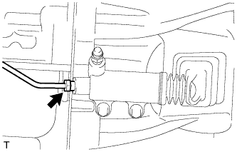
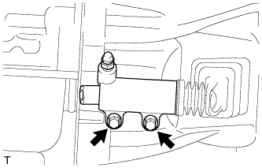

РАБОЧИЙ ЦИЛИНДР СЦЕПЛЕНИЯ (для моделей с 5L-E) > СНЯТИЕ |
| 1. DRAIN BRAKE FLUID FROM CLUTCH LINE |
| 2. REMOVE FRONT PROPELLER SHAFT ASSEMBLY |
Remove the front propeller shaft (See page Нажмите здесь).
| 3. DISCONNECT CLUTCH RELEASE CYLINDER TO FLEXIBLE HOSE TUBE |
|  |
Using a union nut wrench, disconnect the tube.
| 4. REMOVE CLUTCH RELEASE CYLINDER ASSEMBLY |
|  |
Remove the 2 bolts and clutch release cylinder.